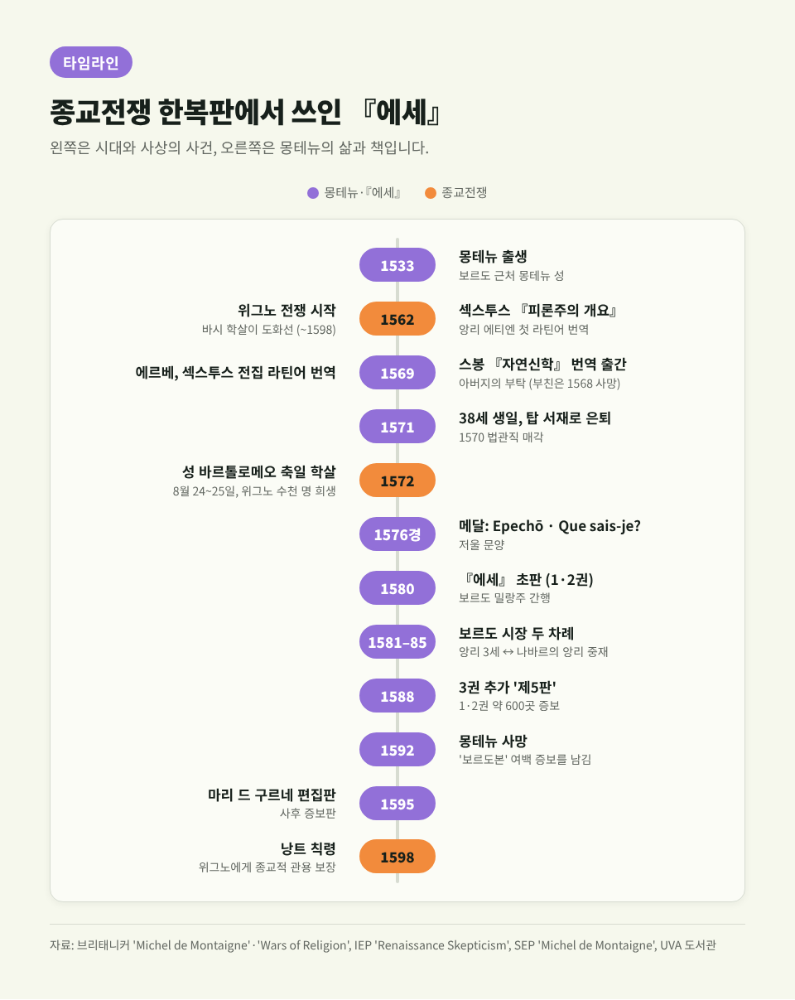
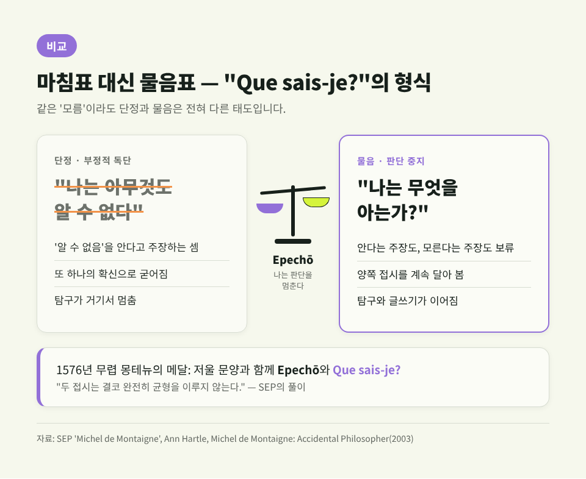
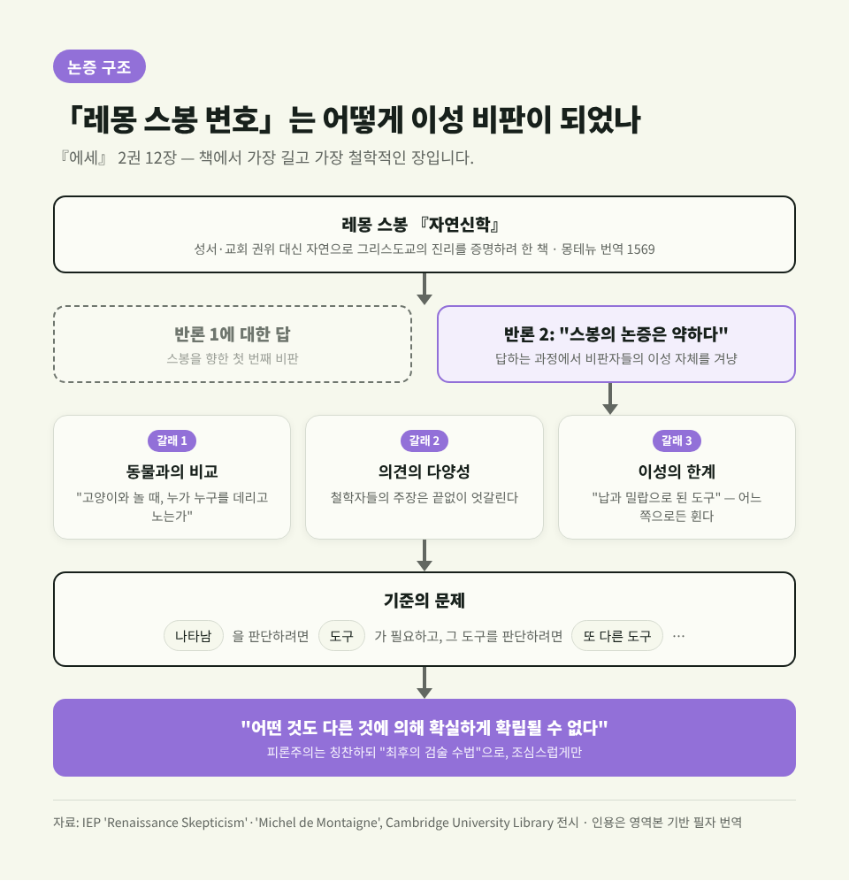
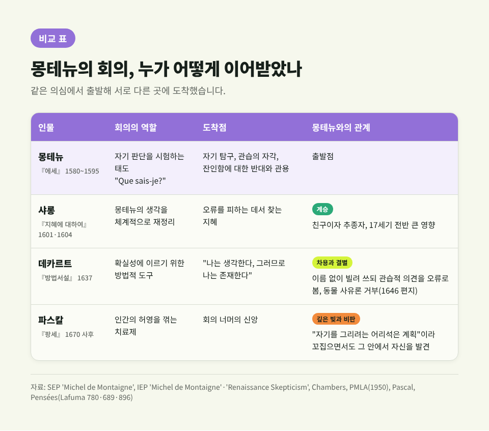

몽테뉴 회의주의 — "나는 무엇을 아는가"가 관용의 철학이 된 이유
오늘은 몽테뉴 회의주의, 그중에서도 『에세』에 담긴 회의의 방법을 이야기해 보려 합니다. "Que sais-je?(나는 무엇을 아는가?)"라는 짧은 물음이 어떻게 자기 탐구의 방법이 되고, 끝내 관용의 철학으로 이어졌는지 따라가 보겠습니다.
먼저 세 줄로 요약하면 이렇습니다.
- 몽테뉴는 1560년대에 라틴어로 재발견된 섹스투스 엠피리쿠스의 피론주의에서 '판단 중지'를 배워, 이를 자기 판단을 시험하는 도구로 바꾸었습니다.
- 「레몽 스봉 변호」는 인간 이성의 오만을 깎아내렸고, 「식인종에 대하여」는 "야만"이라는 말이 결국 자기 관습의 다른 이름일 수 있음을 보여 주었습니다.
- 종교전쟁 한복판에서 나온 이 회의는 "확신 때문에 사람을 불태우지 말라"는 관용의 태도로 이어졌고, 데카르트와 파스칼은 그 유산을 각자 다른 방식으로 받아 비판했습니다.
인용 표기 안내: 본문의 『에세』 인용은 찰스 코튼 영역본(1685, 해즐릿 개정) 등 공개 영역본과 스탠퍼드 철학 백과(SEP)·인터넷 철학 백과(IEP)가 인용한 영역 문장을 바탕으로 필자가 우리말로 옮긴 것입니다. 우리말 완역본으로는 심민화·최권행 옮김 『에세』(민음사, 2022, 전 3권, 보르도본 저본)가 있습니다.
■ 회의주의가 태어난 자리 — 종교전쟁 한복판의 탑 서재
미셸 드 몽테뉴는 1533년 보르도 근처 몽테뉴 성에서 태어나 1592년에 세상을 떠났습니다. 아버지는 아들에게 라틴어로만 말을 걸게 했고, 몽테뉴는 여섯 살 무렵까지 프랑스어를 몰랐다고 회고합니다.
그는 보르도 고등법원의 법관이었습니다. 1570년 그 자리를 내려놓았고, 이듬해 서른여덟 번째 생일에 서재 벽에 라틴어 문장을 새겼습니다. 궁정과 공직의 굴레에 오래 지쳐, 이제 학문의 뮤즈들 품으로 물러난다는 내용입니다.
원형 탑의 서재에는 약 천 권의 책이 있었고, 천장 들보에는 전도서·섹스투스 엠피리쿠스·루크레티우스 등의 격언이 새겨져 있었습니다. 『에세』는 그곳에서 쓰였습니다.
배경을 함께 보아야 합니다. 프랑스는 1562년부터 1598년까지 가톨릭과 위그노(프랑스 개신교도)가 맞선 종교전쟁을 치르고 있었습니다. 1572년 8월, 성 바르톨로메오 축일 학살로 수천 명의 위그노가 목숨을 잃었습니다. 몽테뉴가 탑에 들어가 글을 쓰기 시작한 시기와 거의 겹칩니다.
몽테뉴 자신은 가톨릭으로 남았지만 가족 가운데 개신교로 돌아선 이들도 있었습니다. 1581년부터 1585년까지 두 차례 보르도 시장을 지내며 앙리 3세와 나바르의 앙리(훗날 앙리 4세) 사이를 중재했고, 양쪽 극단에게 모두 시달렸습니다.

모두가 "내가 옳다"고 외치며 칼을 들던 시대였습니다. 그 한가운데서 한 사람은 반대로 물었습니다. 나는 정말 아는가, 하고 말입니다.
■ "나는 무엇을 아는가" — 마침표 대신 물음표
1576년 무렵 몽테뉴는 자신의 메달을 만들었습니다. 한쪽에는 그리스어 "에페코(Epechō, 나는 판단을 멈춘다)", 다른 쪽에는 "Que sais-je?"가 새겨졌고, 문양은 저울이었습니다.
여기서 눈여겨볼 것은 문장의 형식입니다. "나는 아무것도 알 수 없다"는 단정이 아닙니다. 그렇게 말하는 순간, '알 수 없다'는 것을 안다고 주장하는 셈이 되기 때문입니다. 몽테뉴는 그 함정을 피해 의문문을 택했습니다. 철학자 앤 하틀은 이 의문의 형식이 몽테뉴에게 특히 매력적이었다고 짚습니다.
저울도 같은 뜻을 담고 있습니다. SEP는 그 저울에 대해 "두 접시는 결코 완전히 균형을 이루지 않는다"고 풀이합니다. 판단을 멈춘다는 것은 아무 생각도 하지 않는다는 뜻이 아닙니다. 양쪽을 계속 달아 보되, 한쪽으로 성급히 기울지 않겠다는 태도에 가깝습니다.

■ 섹스투스 엠피리쿠스의 귀환과 판단 중지
몽테뉴의 회의주의에는 분명한 원천이 있습니다. 2~3세기 무렵의 피론주의 철학자 섹스투스 엠피리쿠스입니다.
그의 『피론주의 개요』는 오래 묻혀 있다가 1562년 앙리 에티엔이 제네바에서 라틴어로 처음 옮기면서 다시 읽히기 시작했습니다. 1569년에는 장티앙 에르베가 『학자들에 대한 반박』까지 포함한 라틴어 전집 번역을 냈습니다. 그리스어 원문이 인쇄된 것은 훨씬 뒤인 1621년입니다. SEP는 몽테뉴가 섹스투스를 만난 일을 '결정적 충격'이라고 표현합니다.
섹스투스가 말하는 회의의 절차는 단순합니다.
- 어떤 주장에든 그와 맞서는 주장을 세운다.
- 두 주장의 힘이 대등함(등가성)을 확인한다.
- 그래서 판단을 멈춘다(에포케).
- 그러면 마음의 평정(아타락시아)이 뒤따른다.
흥미로운 것은 평정이 목표로 추구되지 않는다는 점입니다. 섹스투스는 평정이 판단 중지를 "그림자가 몸을 따르듯" 따라온다고 말합니다. 말의 거품을 끝내 그리지 못한 화가 아펠레스가 스펀지를 그림에 던졌더니 거품이 그려졌다는 일화가 그 비유입니다.
그렇다면 판단을 멈춘 사람은 어떻게 살아갈까요. 섹스투스는 자연(지각과 사고), 감정(배고픔과 목마름), 관습과 법, 기술의 가르침이라는 네 가지를 믿음 없이 따르면 된다고 답합니다. 이 '관습을 따르라'는 대목은 나중에 몽테뉴가 보수적으로 읽히는 이유가 되기도 합니다.
다만 몽테뉴가 섹스투스를 그대로 옮긴 것은 아닙니다. IEP는 그가 가장 자주 인용한 회의주의 원천이 오히려 키케로의 『아카데미카』였고, 잠정적인 믿음을 허용하는 '완화된' 회의에 가깝다고 봅니다. 믿음 없이 사는 극단보다는, 믿되 늘 다시 시험하는 쪽이었다는 뜻입니다.
■ 「레몽 스봉 변호」 — 이성을 변호하다 이성을 시험하다
『에세』 2권 12장 「레몽 스봉 변호」는 책 전체에서 가장 길고 가장 철학적인 장입니다.
사연은 아버지에게서 시작됩니다. 15세기 카탈루냐 학자 레몽 스봉은 『자연신학』에서 성서나 교회의 권위가 아니라 자연을 통해 그리스도교의 진리를 증명하려 했습니다. 아버지의 부탁으로 몽테뉴는 이 책을 프랑스어로 옮겼고, 번역은 1569년에 나왔습니다. 아버지는 그 전해인 1568년에 세상을 떠나 책을 보지 못했습니다.
「변호」는 스봉에게 쏟아진 두 가지 반론에 답하는 형식입니다. 그런데 두 번째 반론, 곧 "스봉의 논증은 약하다"는 비판에 답하면서 글의 방향이 크게 바뀝니다. 몽테뉴는 스봉의 논증을 보강하는 대신, 비판자들이 믿는 이성 자체를 문제 삼습니다.
그 공격은 세 갈래로 이어집니다.
- 동물과의 비교 — "내가 고양이와 놀 때, 고양이가 나를 데리고 노는 것은 아닌지 누가 알겠는가."
- 의견의 다양성 — 철학자들의 주장은 서로 끝없이 엇갈립니다.
- 이성의 쓸모의 한계 — IEP의 표현을 빌리면 이성은 "납과 밀랍으로 된 도구"처럼 어느 쪽으로든 휘어집니다.
마지막에는 '기준의 문제'가 놓입니다. 나타나는 것을 판단하려면 판단의 도구가 필요하고, 그 도구가 옳은지 판단하려면 또 다른 도구가 필요합니다. 끝없는 되물음입니다. 몽테뉴는 결국 "어떤 것도 다른 것에 의해 확실하게 확립될 수 없다"고 결론짓습니다.

그 출발점에는 이런 진단이 있습니다. "오만은 우리의 타고난 본래의 병이다." 그는 모든 피조물 가운데 가장 연약한 것이 인간인데, 동시에 가장 오만하다고 덧붙입니다.
흥미롭게도 몽테뉴는 피론주의를 칭찬하면서도 그것을 "최후의 검술 수법", "필사의 일격"이라 부르며 조심스럽게만 쓰라고 당부합니다. 모든 것을 무너뜨리는 칼은 휘두르는 사람도 다치게 할 수 있음을 알았던 것입니다.
■ 「식인종에 대하여」 — 야만은 누구의 이름인가
회의가 밖을 향하면 무엇이 보일까요. 『에세』 1권 30장(판본에 따라 31장) 「식인종에 대하여」가 그 답입니다.
몽테뉴는 브라질 투피남바족을 다룹니다. 그곳에서 12년가량 살았던 하인 등에게서 들은 이야기를 바탕으로, 전쟁 포로를 죽인 뒤 먹는 그들의 관습을 서술합니다. 그리고 시선을 유럽으로 돌립니다.
"각자는 자기 관습이 아닌 것을 야만이라 부른다."
그는 산 사람을 먹는 것이 죽은 사람을 먹는 것보다 더 야만적이라고 말합니다. 산 사람을 고문하고, 신앙과 경건을 핑계로 불태우는 일이 바로 그의 눈앞에서 벌어지고 있었기 때문입니다. 이성의 기준으로는 그들을 야만이라 부를 수 있어도, 우리 자신과 견주면 그렇게 부를 수 없다는 것이 그의 결론입니다.
1560년대 초, 몽테뉴는 루앙에서 브라질 원주민들을 직접 만났습니다. 그들이 프랑스에서 가장 이상하게 여긴 것 가운데 몽테뉴가 기억한 두 가지는 이렇습니다. 수염 난 건장한 어른들이 어린아이(소년 왕 샤를 9세)에게 복종한다는 것. 그리고 온갖 재화를 가진 이들 곁에서, 그들의 "반쪽들"인 이웃이 문간에서 굶주리는데도 들고일어나지 않는다는 것이었습니다.
장은 이렇게 끝납니다. "하지만 뭐, 그들은 바지를 입지 않는다." 유럽 독자의 우월감을 향한, 짧고 서늘한 반어입니다.
예전에는 '야만'이 바깥 세계를 가리키는 말이었습니다. 몽테뉴 이후로 그 말은 거울이 되었습니다. 레비스트로스가 그를 문화상대주의의 선구자로 꼽은 것도 이 때문입니다.
다만 SEP가 지적하듯 몽테뉴가 상대주의를 끝까지 밀어붙인 것은 아닙니다. 그는 야만에도 정도가 있다고 보았습니다. 모든 관습이 똑같이 옳다는 것이 아니라, 내 관습도 심판대에 함께 올라야 한다는 것입니다.
■ 회의가 관용이 되는 방식
여기서 이 글의 핵심 질문으로 돌아가 보겠습니다. "나는 무엇을 아는가"라는 물음은 어떻게 관용이 될까요.
연결 고리는 의외로 단순합니다. 내 판단이 틀릴 수 있다는 것을 진지하게 받아들이면, 그 판단을 근거로 남의 몸에 손대는 일에 극도로 신중해질 수밖에 없습니다.
몽테뉴는 당시 성행하던 마녀재판을 정면으로 의심했습니다. 마녀를 처벌해야 한다고 주장한 장 보댕을 비판하며, 그런 이들에게는 독미나리(사약)보다 광기를 다스리는 헬레보어를 처방하겠다고 말했습니다. 3권 11장 「절름발이에 대하여」에는 이런 문장이 있습니다. "결국, 자기 추측 때문에 사람을 산 채로 불태우는 것은 그 추측에 너무 비싼 값을 매기는 일이다."
2권 19장 「양심의 자유에 대하여」에서는 종교전쟁을 직접 겨냥합니다. 그는 선한 의도라도 절제 없이 밀어붙이면 매우 악한 결과로 치닫는다고 씁니다. 스스로 옳다고 여긴 가톨릭 쪽 열성파조차 부당하고 폭력적인 일에 휩쓸린다고 지적합니다. 그리고 종교의 자유를 허용한 로마 황제 율리아누스와 프랑스 왕들의 정책을 견주며, 그 자유가 분열을 키울 수도, 대립을 누그러뜨릴 수도 있다고 양면을 함께 따집니다.
IEP는 몽테뉴가 육체적 잔인함을 가장 나쁜 악덕으로 꼽았다고 정리합니다. 절제를 중시한 그였지만, 잔인함에 대해서만은 "잔인한 증오"를 품었다고 할 정도입니다. SEP 역시 『에세』에서 타자성과 다양성을 인정하는 "관용과 다원주의의 철학"이 나타난다고 평가합니다.
정리하면 몽테뉴의 관용은 "모두가 옳다"는 너그러움에서 나온 것이 아닙니다. "나도 확실하지 않다"는 자각에서 나온 것입니다.
■ '에세'라는 형식 — 결론 대신 시도
몽테뉴의 회의는 글쓰기 형식에도 고스란히 배어 있습니다.
'에세(essais)'는 프랑스어 동사 essayer, 곧 시도하다·시험하다·실험하다에서 왔습니다. IEP는 이 제목이 장르 이름이라기보다 인식의 겸손과 자기 시험을 드러내는 표지라고 설명합니다. 영역자 스크리치는 이를 금속의 성분을 가려내는 '시금(assays)'으로 옮기기도 했습니다. SEP의 표현대로 몽테뉴는 어떤 주제든 자기 판단을 시험대에 올려 그 약점을 알아차리는 방식으로 철학을 했습니다.
그래서 그의 책에는 체계가 없습니다. 그는 독자에게 "나 자신이 내 책의 재료"라고 밝힙니다. 1580년 두 권으로 나온 책은 1588년 3권이 더해지고 1·2권에도 600곳가량이 증보되었습니다. 그 뒤에도 몽테뉴는 자기 책 여백에 손으로 계속 덧붙였고, 이 '보르도본'을 바탕으로 사후 1595년 양녀 마리 드 구르네가 새 판을 펴냈습니다.
한 번 쓴 결론을 지우지 않고, 그 옆에 새로운 생각을 덧대는 방식. 판단 중지는 그에게 글을 멈추는 이유가 아니라, 계속 쓰는 이유였습니다.
■ 데카르트와 파스칼 — 물려받고, 반박하다
몽테뉴의 회의는 다음 세기 프랑스 철학의 출발점이 되었습니다. 다만 그 유산을 받은 이들은 저마다 다른 길로 갔습니다.
먼저 그의 친구이자 추종자였던 피에르 샤롱은 『지혜에 대하여』(1601, 1604)에서 몽테뉴의 생각을 체계적으로 재정리했습니다. 이 책은 17세기 전반 프랑스 철학에서 가장 영향력 있는 책으로 꼽힐 정도였습니다.
데카르트는 『방법서설』(1637)에서 몽테뉴의 이름을 밝히지 않은 채 그의 생각을 빌려 씁니다. "세상이라는 큰 책"을 읽으러 떠난 여행, 그리고 "예와 관습만으로 설득된 것은 너무 굳게 믿지 않기"를 배웠다는 대목이 그렇습니다. 그러나 방향은 정반대였습니다. 몽테뉴에게 의심이 머무는 자리였다면, 데카르트에게 의심은 확실성에 이르기 위한 도구였습니다. "나는 생각한다, 그러므로 나는 존재한다"는 그 도착점입니다. 1646년 편지에서 그는 동물에게 사유를 인정한 "몽테뉴의 견해에 동의할 수 없다"고 분명히 선을 긋기도 했습니다.
파스칼의 관계는 더 복잡합니다. 연구자 체임버스는 파스칼이 다른 어떤 작가보다 몽테뉴에게 많은 빚을 졌지만, 그의 이름을 꺼낼 때는 대개 비난을 곁들였다고 정리합니다. 『팡세』에서 파스칼은 "자기를 그리려는 어리석은 계획"을 꼬집으면서도, "내가 거기서 보는 모든 것을 나는 몽테뉴가 아니라 내 안에서 발견한다"고 고백합니다. 파스칼은 피론주의를 인간의 허영을 꺾는 치료제로 받아들였지만, 그 회의가 신앙으로 건너가지 않고 머무는 것은 받아들이지 못했습니다.

■ 아쉬운 점과 남는 논쟁
몽테뉴를 무조건 찬양하기는 어렵습니다. 분명한 한계와 논쟁도 함께 보아야 합니다.
- 신앙주의인가, 무신론인가. 철학사가 팝킨은 그를 회의로 신앙에 자리를 내준 '새로운 피론주의자'의 대표로 읽었습니다. 반면 그를 무신론자로 의심한 시선도 있었고, 『에세』는 1676년 로마 교회의 금서 목록에 올랐습니다. SEP는 몽테뉴가 '신앙주의'라는 말을 쓴 적은 없다고 덧붙입니다.
- 보수주의의 그림자. 관습을 따르라는 권고는 현실 질서를 그대로 두자는 정치적 정숙주의로 읽히기도 합니다. 그는 가톨릭 편에 섰고 기존 종교와 질서를 지키는 쪽이 더 정당하다고 보았습니다.
- 고귀한 야만인의 낭만화. 「식인종에 대하여」는 원주민을 지나치게 이상화했다는 비판도 받습니다.
- 회의주의자이기는 했나. 하틀은 몽테뉴가 엄밀한 의미의 회의주의자가 아니며, '회의의 순간'을 자기 사유 안에 녹였다고 봅니다.
아직 정리되지 않은 논쟁입니다. 어쩌면 몽테뉴다운 결말이기도 합니다.
■ 오늘 다시 묻는 "Que sais-je?"
몽테뉴의 물음은 지금도 낡지 않았습니다. 확신이 빠르게 퍼지고, 다른 생각을 가진 이를 곧장 '야만'으로 부르는 장면은 지금도 흔합니다.
그가 남긴 방법은 거창하지 않습니다. 판단을 내리기 전에 반대편 접시에 무엇이 놓여 있는지 확인할 것. 내가 당연하다고 여기는 것이 관습은 아닌지 물을 것. 그리고 내 추측에, 남의 삶을 걸 만큼 비싼 값을 매기지 않을 것.
정리하면 이렇습니다. 몽테뉴 회의주의는 모든 것을 부수는 망치가 아니라, 자기 판단을 다는 저울이었습니다.
"모른다는 자각이 타인을 함부로 심판하지 않게 한다."
종교전쟁의 불길 속에서 한 사람이 서재에 앉아 던진 물음이 왜 지금까지 읽히느냐고 물으신다면, 저는 그 물음이 아직 우리에게 답을 요구하고 있기 때문이라고 답하겠습니다.
참고자료
- Stanford Encyclopedia of Philosophy, "Michel de Montaigne" (2026-08 개정) — https://plato.stanford.edu/entries/montaigne/
- Stanford Encyclopedia of Philosophy, "Sextus Empiricus" — https://plato.stanford.edu/entries/sextus-empiricus/
- Internet Encyclopedia of Philosophy, "Michel de Montaigne (1533–1592)" — https://iep.utm.edu/montaigne/
- Internet Encyclopedia of Philosophy, "Renaissance Skepticism" — https://iep.utm.edu/renaissance-skepticism/
- Encyclopaedia Britannica, "Michel de Montaigne" — https://www.britannica.com/biography/Michel-de-Montaigne
- Encyclopaedia Britannica, "Wars of Religion" — https://www.britannica.com/event/Wars-of-Religion
- University of Virginia Library, 16세기 『에세』 주요 판본 전시 — https://explore.lib.virginia.edu/exhibits/show/renaissance-in-print/literaryworks/montaigne2
- Cambridge University Library, "Sebond and scepticism" 전시 — https://wwwe.lib.cam.ac.uk/CUL/exhibitions/Montaigne/c5.html
- Ann Hartle, Michel de Montaigne: Accidental Philosopher (Cambridge UP, 2003) — https://assets.cambridge.org/97805218/21681/sample/9780521821681ws.pdf
- Frank M. Chambers, "Pascal's Montaigne", PMLA 65(5), 1950 — https://www.cambridge.org/core/journals/pmla/article/pascals-montaigne/017BB743A1ED98C10EA94E3885DE5150
- John Weightman, "How Wise Was Montaigne?", The New York Review of Books, 1992 — https://www.nybooks.com/articles/1992/11/05/how-wise-was-montaigne/
- EBSCO Research Starters, "Of Cannibals" — https://ebsco.com/research-starters/history/cannibals-michel-eyquem-de-montaigne
- Montaigne, Essays, Charles Cotton 역·W. C. Hazlitt 개정 (HyperEssays) — https://www.hyperessays.net/essays/book/I/chapter/30 , https://hyperessays.net/essays/on-freedom-of-conscience/
- Montaigne, Essays (Cotton 역, Project Gutenberg) — https://www.gutenberg.org/cache/epub/3598/pg3598.html
- Descartes, Discourse on Method (John Veitch 역, Project Gutenberg) — https://gutenberg.org/files/59/59-h/59-h.htm
- Pascal, Pensées (Lafuma 편) 프랑스어 발췌 — https://web.stanford.edu/~jsabol/certainty/readings/Pascal-PenseesFr.pdf
- 서울신문, 민음사 『에세』(심민화·최권행 옮김) 번역자 인터뷰, 2022-07-13 — https://m.seoul.co.kr/news/2022/07/13/20220713500170